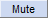

Note Tracks
- Note Tracks can be useful to visually compare a given MIDI (or Allegro) file with a sampled audio file (such as WAV) of the same music.
- They can be cut-and-paste edited.
- They can then be exported using the command. When exporting so as to overwrite an existing GRO, MID or MIDI file, the original file is renamed with ".bak" suffix, for example "keyboards.mid.bak".
A Note Track
Note tracks can be created by importing MIDI (or Allegro) files with .
Playing and editing Note tracks
MIDI and Allegro playback
Note tracks containing MIDI data (or Allegro data) can now be played in Audacity. Loop Play and Play Cut Preview also work with Note tracks. But note that there will no use of the Playback meter while Note tracks are played.
Please see these pages in the Audacity Wiki:
Editing Note Tracks
Only limited editing can be performed on Note tracks such as cutting, pasting and deleting.
Track Control Panel
- The Track Control Panel at the left of the note track has controls for this track. Left-clicking other than on a control performs track selection and move as follows.
- Clicking selects all this track's audio, deselecting all other tracks.
- Holding Shift while clicking selects all this track's audio, keeping already selected tracks selected.
- (keyboard: use Up or Down to give the track focus, then Enter to select it; hold Shift then use Up or Down to extend selection into another track. Read keyboard selection for more).
- Click-and-drag moves this track up or down when there are other tracks (keyboard: choose one of the "Move Track" commands in Note Track Dropdown Menu, opened by Shift + M on the currently focused track ).
Controls
Close Button:
- Clicking this button will close the track, removing it from the project.
Note Track Dropdown Menu:
- Clicking the track name or using Shift + M on the currently focused track opens the Note Track Dropdown Menu giving options that affect this track only. Newly created tracks are named "Note Track".
Mute Button:
-  Click to silence this track when playing. By default, the track will only be silenced if no Solo buttons are depressed. Click again to unsilence. Tracks on which the Mute button is pressed are never exported.
Solo Button:
 Click to play just this track. Click again to release the button. Whenever playing audio, Solo takes precedence over Mute by default - the Mute buttons have no effect whilst any Solo button is down. There are two other options for Solo button behavior in the Tracks Preferences. One of these is to remove the Solo button, leaving only a Mute button.
Click to play just this track. Click again to release the button. Whenever playing audio, Solo takes precedence over Mute by default - the Mute buttons have no effect whilst any Solo button is down. There are two other options for Solo button behavior in the Tracks Preferences. One of these is to remove the Solo button, leaving only a Mute button.
Channel toggles:
- Shows enabled channels, color coded to match the actual notes in the channels. Individual channels may be toggled by left-clicking, or all other channels can be muted/unmuted by right-clicking. Channel numbers start at 1; channel 10 is the channel that is reserved for percussion by most MIDI devices.
Velocity Slider:
 Set the velocity offset for this track. Hold down the shift key while dragging to adjust the slider in finer increments. Double-click the slider to bring up a window where you can make precise adjustments or enter a velocity value.
Set the velocity offset for this track. Hold down the shift key while dragging to adjust the slider in finer increments. Double-click the slider to bring up a window where you can make precise adjustments or enter a velocity value.- Velocity is in units of MIDI velocity, ranging from 1 (lowest) to 127 (highest). The offset from this slider (ranging from -50 to +50) is combined with each note's individual velocity to produce the resultant velocity.
Track Collapse Button:
- Click on this to make the track 'fold up' into a smaller size. Click again, or drag the lower edge of the track to restore the size.
Status Indicators
- Sync-Lock Indicator:
 When present (at bottom-right of the Track Control Panel, adjacent to the Track Collapse button), indicates that this track is part of a Sync-Locked Track Group.
When present (at bottom-right of the Track Control Panel, adjacent to the Track Collapse button), indicates that this track is part of a Sync-Locked Track Group.
Vertical Scale

The vertical scale displays note pitches next to a piano, ranging from the lowest to the highest possible MIDI notes (C -1 to G 9). Each octave is labeled at C (and the notes above are in that octave). When the mouse pointer is over the scale it changes to a magnify icon
 .
.
- Left-click in the Vertical Scale to zoom in. The range displayed on the scale will be centered at the value you clicked at. Left-click and drag a region up or down then release to zoom into that region. You can press Esc to cancel the zoom operation if you commence a drag by mistake.
- Hold Shift and left-click (or use unmodified right-click) to zoom out progressively. When the Shift key is held down the plus sign on the magnify icon changes to a minus icon.
- Hold Shift and rotate the mouse wheel to scroll up and down at the same zoom level, using the same visible range.
- Hold Ctrl and rotate the mouse wheel to zoom in or out at the mouse pointer's position.
- Hold Shift and right-click to zoom out in one step to show the entire range of notes (from C -1 to G 9).
Note Track Dropdown Menu
Clicking the note track's name by the downward-pointing triangle (or using shortcut Shift + M or the keyboard Menu key when the note track has focus) opens the Note Track Dropdown Menu:

- Name
- Displays the "Track Name" dialog where you can give the track a new name. Useful in multi-track projects to provide a visual indication of the content of each track.
- Up Octave and Down Octave
- Moves the vertical scale up or down one octave.
Moving Tracks
Tracks can be moved up and down using the menu items.
- Move Track Up: Moves track up.
- Move Track Down: Moves track down.
- Move Track to Top: Moves track to become the topmost track in the project.
- Move Track to Bottom: Moves track to become the bottom track in the project.
Note tracks can also be moved up or down by clicking between the controls in the track's Track Control Panel then dragging upwards or downwards.
Note display
The notes from the MIDI sequence are displayed within the track.
Colors indicate the MIDI channels that the given note is in, and match those seen in the channel toggles. Each channel has an instrument assigned to it (not currently shown), although channels can change instruments partway through. Channel 10 (gray) is reserved by most MIDI devices for percussion. Some allegro files and MIDI files have more than 16 channels, in that case they will be displayed as a different gray.
Notes that are above or below the visible area will be drawn in black in the top or bottom rows (no matter how far above or below they are), to indicate that there is something to be scrolled to.
Blue vertical lines indicate measures. Note that some MIDI files do not have accurate tempo information, in which case the lines may not match actual measures in the song.